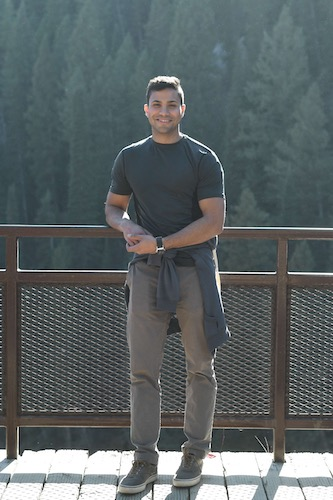

- Major: Software Engineering
- High School: Cypress Creek High School(2011)
- Year At UVU: Junior
- Favorite Ice Cream Flavor: Cookies and Cream

×

To the drivers that keep hitting my car
My car has been hit
Why does this keep happening?
Utah drivers suck!
I love Jet Skiing!. Growing up in Florida, I could not wait for the weekend I would be at the beach so I could jet ski. I still remember the adrenaline feeling of running over water at 50 mph. My favorite part was jumping over the waves. I would drive fast so my jet ski could get a few inches of the water.
I also enjoy traveling. I love getting to see new places, eating new food, meeting new cultures. I remember going to Australia a few years ago, and falling in love with their amazing views. Costa Rica food was one of the best food I ever tasted, and I still crave it sometimes. Brazil some of the most friendly people in the world, it is easy to make new friends over there. After I finish school I would like to visit at least one new country every year.
I love being active. Ever since I was kid, I loved running around and playing outdoors. In high school I played soccer, wrestling, and track and field. Going to the gym is a most, because is a way I can clear my head from doing homework all day. I enjoy hicking, even though I do not go all the time because my days are very busy with tasks.
| Monday | Tuesday | Wednesday | Thursday | Friday | |
|---|---|---|---|---|---|
| 12:00 | Interpersonal Communication | Interpersonal Communication | Computer Assembly | ||
| 12:30 | |||||
| 1:00 | Data Structures | Data Structures | |||
| 1:30 | |||||
| 2:00 | |||||
| 2:30 | Discrete Math I | Discrete Math I | Discrete Math I | ||
| 3:00 | |||||
| 3:30 |